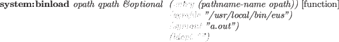

unix:getpid [function]
-
-
returns the process id (16bit integer) of this process.
unix:getppid [function]
-
-
returns the process id of the parent process.
unix:getpgrp integer [function]
-
-
returns the process group id.
unix:setpgrp integer [function]
-
-
sets a new process group id.
unix:getuid [function]
-
- gets user id of this process.
unix:geteuid [function]
-
-
returns the effective user id of this process.
unix:getgid [function]
-
-
returns the group id of this process.
unix:getegid [function]
-
-
returns the effective group id of this process.
unix:setuid integer [function]
-
-
sets effective user id of this process.
unix:setgid integer [function]
-
-
sets the effective group id of this process.
unix:fork [function]
-
-
creates another EusLisp. 0 is returned to the subprocess and the pid of
the forked process is returned to the parent process.
Use system:piped-fork described in section 13.3
to make a process connected via pipes.
unix:vfork [function]
-
-
forks another EusLisp, and suspends the parent process from execution
until the new EusLisp process terminates.
unix:exec path [function]
-
-
replaces executing EusLisp with another program.
unix:wait [function]
-
-
waits for the completion of one of subprocesses.
unix:exit code [function]
-
-
terminates execution and returns code as its completion status.
Zero means normal termination.
sys:*exit-hook* [variable]
-
-
Defines a function that is called just before the process is exited.
unix:getpriority which who [function]
-
-
returns the highest priority (nice value) enjoyed by this process.
Which is one of 0(process), 1(process-group) or 2(user).
unix:setpriority which who priority [function]
-
-
sets priority
of the resource determined by which and who.
which is one of 0(process), 1(process-group) or 2(user).
who is interpreted relative to which
(a process identifier
for , process group identifier for ,
and a user ID for
 .
A zero value of who denotes
the current process, process group, or user.
To lower the priority (nice value) of your EusLisp process,
(unix:setpriority 0 0 10) will sets the nice value to 10.
Bigger nice value makes your process get less favored.
.
A zero value of who denotes
the current process, process group, or user.
To lower the priority (nice value) of your EusLisp process,
(unix:setpriority 0 0 10) will sets the nice value to 10.
Bigger nice value makes your process get less favored.
unix:getrusage who [function]
-
-
returns list of system resource usage information about who process.
Elements are ordered as follows:
More comprehensive display is obtained by lisp:rusage.
float ru_utime (sec.) /* user time used */
float ru_stime (sec.) /* system time used */
int ru_maxrss; /* maximum resident set size */
int ru_ixrss; /* currently 0 */
int ru_idrss; /* integral resident set size */
int ru_isrss; /* currently 0 */
int ru_minflt; /* page faults without physical I/O */
int ru_majflt; /* page faults with physical I/O */
int ru_nswap; /* number of swaps */
int ru_inblock; /* block input operations */
int ru_oublock; /* block output operations */
int ru_msgsnd; /* messages sent */
int ru_msgrcv; /* messages received */
int ru_nsignals; /* signals received */
int ru_nvcsw; /* voluntary context switches */
int ru_nivcsw; /* involuntary context switches */
unix:system [command] [function]
-
-
executes command in a sub shell.
command must be recognizable by Bourn-shell.
unix:getenv env-var [function]
-
-
gets the value for the environment variable env-var.
unix:putenv env [function]
-
-
adds env in the process's environment variable list.
env is a string which equates var to value
like "VARIABLE=value".
unix:sleep time [function]
-
-
suspends execution of this process for time seconds.
unix:usleep time [function]
-
-
suspends execution of this process for time micro-seconds
(u represents micro).
Usleep is not available on Solaris2 or other Sys5 based systems.
2016-03-23